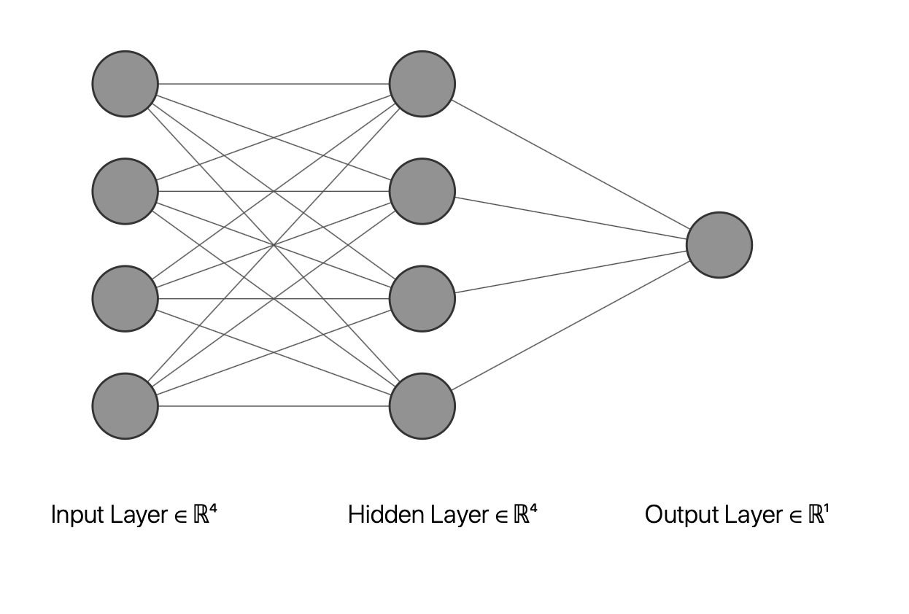
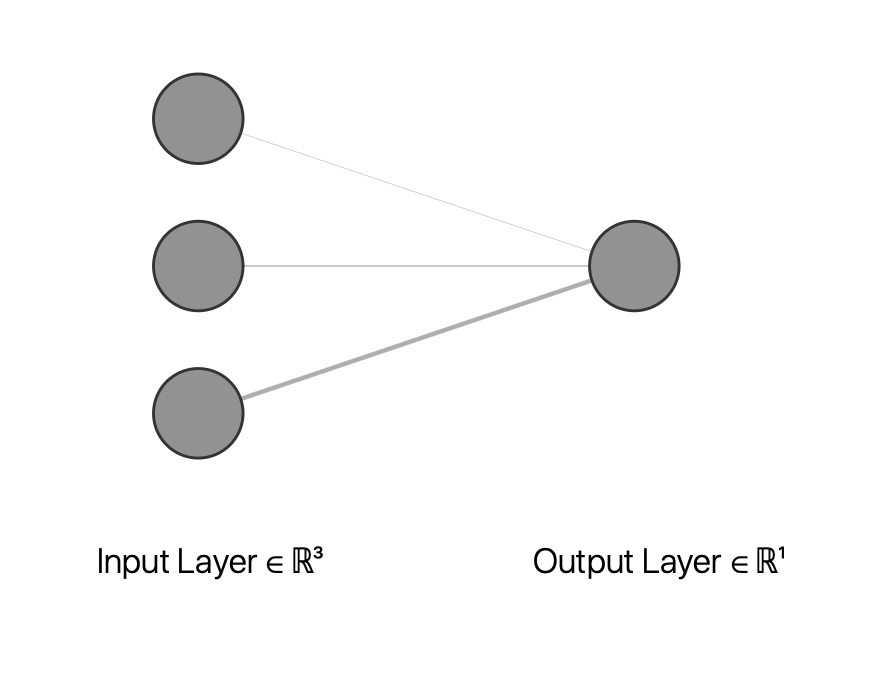

Forward Propagation
Forward Propagation
 We will again be considering this architecture. We have: $$ a_1^{(2)} = $$ $$ \sigma(\theta_{10}^{(1)}x_0 + \theta_{11}^{(1)} x_1 + \theta_{12}^{(1)} x_2 + \theta_{13}^{(1)} x_3) $$ $$ = \sigma(z_1^{(2)})$$ and similarly we have $$ a_2^{(2)} = \sigma(z_2^{(2)}), a_3^{(2)} = \sigma(z_3^{(2)})$$ then in order to calculate the output we have these functions. Then: $$ a_1^{(3)} = \sigma(z_1^{(3)})$$ Now we will define the vectorized variables for simplification. $$ x = \begin{bmatrix} x_0 \\ x_1 \\ x_2 \\ x_3 \end{bmatrix}, z^{(2)} = \begin{bmatrix} z_1^{(2)} \\ z_2^{(2)} \\ z_3^{(2)} \end{bmatrix}$$ We have then the following relations $$ a^{(1)} = x,z^{(2)} = \theta^{(1)}a^{(1)}, a^{(2)} = \sigma(z^{(2)})$$ At this point we have a critical step. We add bias in every layer. Therefore we will have $$ a^{(2)} := \begin{bmatrix} 1 \\ a^{(2)} \end{bmatrix}$$ Now we added the bias in the second layer. We can continue the same process as before: $$ z^{(3)} = \theta^{(2)} a^{(2)}, a^{(3)} = \sigma(z^{(3)})$$
Neural Networks of Logical Operators
AND Operator
We will have two variables $$x_1,x_2 \in \{ 0 , 1\}, y = x_1 AND x_2$$  We will then have one output. We define the weights as $$\theta = \begin{bmatrix} -30 \\ 20 \\ 20 \end{bmatrix} $$ $$ \rightarrow a_1^{(2)} = \sigma(-30+20x_1+20x_2)$$ Then we can write down the logic table.
| x1 | x2 | y |
|---|---|---|
| 0 | 0 | 0 |
| 0 | 1 | 0 |
| 1 | 0 | 0 |
| 1 | 1 | 1 |
OR Operator
In this case we will have the same architecture as we have two inputs and one output. We change our weights by: $$\theta = \begin{bmatrix} -10 \\ 20 \\ 20 \end{bmatrix}$$ This will give the following logic table:
| x1 | x2 | y |
|---|---|---|
| 0 | 0 | 0 |
| 0 | 1 | 1 |
| 1 | 0 | 1 |
| 1 | 1 | 1 |
NOT Operator
We will have a different architecture now, because we have one input and one output this time. Note that the input layer will be two layers as we have one input and one bias. We will have the weights, $$\theta = \begin{bmatrix} 10 \\ -20 \\ \end{bmatrix}$$ This will give the following logic table:
| x | y |
|---|---|
| 1 | 0 |
| 0 | 1 |